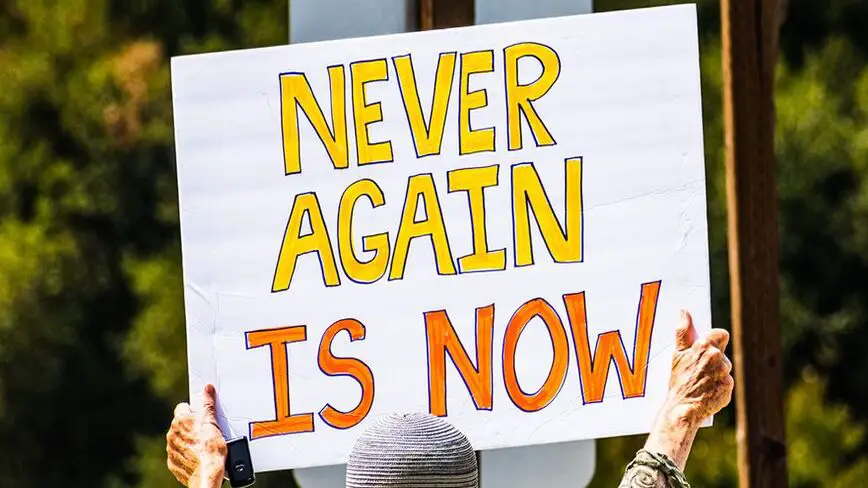

|  |
Time to act is Now!
Current wars in Sudan, Gaza and Ukraine are interlinked and resolving the most global of these conflicts will lead to stabilizing, cascading effects. Lack of immediate action to stop humanitarian crises will have negative cascading effects for the entire planet and for the main power holders in the world.
Catastrophe must be prevented
Sudan
The war in Sudan is beginning to cause mass starvation. Soon the lives of millions of people will be at stake. Sudan's internal peace talks failed because of conflicting interests of surrounding and other African and Middle Eastern nations. Most of those countries are themselves neo-colonies to various degrees or at least partially rely on external partnerships for security. Thus they cannot guarantee stability without the involvement of world-wide power holders. The situation is further complicated by Sudan's proximity to the Red Sea that has strategic importance to the world as a whole.
Applying maximum pressure to reach a lasting ceasefire in Sudan could greatly further the national interests of the USA. The new special envoy should have direct access to the US Secretary of State and the president of the United States, with assurances of swift action of the highest level offices when needed. He should be given carte blanche abilities to resolve the conflict as soon as possible. All possible measures should be taken to prevent the possibility of the biggest humanitarian crisis since WWII.
Gaza
Insufficient access to water and food is already putting hundreds of thousands of Gazans at the risk of starvation and funding for existing aid could run out by March. Immediate measures must be taken to ensure survival of Gazans. Accomplishing a lasting ceasefire is the best course of action for all parties involved. As part of the current diplomatic effort, agreements must be made to ensure the flow of humanitarian aid to Gazans. Failure to do so now will also destabilize the situation in Israel and in the region as a whole, and will cause a shift in the public opinion in the West as a whole and in the United States specifically.
Now is the time to stop humanitarian crises in Sudan and Gaza!
A ceasefire in Ukraine must be reached
The world security reconfiguring conflict in Ukraine caused a chain reaction that emboldened the positions of conflicting parties in Sudan and spiraled out of control. Achieving peace in Europe will stabilize the security situation of the world as a whole. A stable security balance in the Middle East will be possible, and war in North East Africa will end. The war in Ukraine directly involves the second military power in the world and bringing it to a state of peace will cause positive ripple effects across the globe.
Logically, direct military confrontation between NATO and the Russian Federation is not in the interests of either party. The feared Russian defensive interests in the Polish and Bessarabian gaps are overextended and likely non-essential to the survival of the Russian state, given its nuclear deterrent capabilities. And the recent efforts to strengthen NATO forces and logistics in Eastern Europe are sufficient for defense of the EU, provided that there is a buffer zone between the Russian and NATO forces to avoid a rollover effect if Ukraine is partitioned. A neutral Ukraine is in the interests of both parties.
It is apparent that the difference in the military potential of Ukraine and Russia is beyond comparison. If the war in Ukraine continues the chances of Ukrainian forces to hold ground are very slim. Best case scenario for Ukraine will likely be losing additional territory in the East and South and agreeing to a neutral status under much worse conditions than are possible now.
If the Russian military commits to a major offensive it may not stop at the Dnieper River and may take Kiev and the rest of central Ukraine. This is the scenario of Ukrainian partition, in which Russian forces come in direct contact with the Polish military and its NATO allies. The chances for accidental escalation of hostilities will be much greater with a potential chain reaction to an all out war, with further possibilities being too horrible to imagine.
When a ceasefire is reached
After a lasting ceasefire is reached in Ukraine, Russia will most likely shift its focus to Central Asia and the Southern Caucasus, where lie its other vital interests. Russian demographics are shifting towards Central Asia and are changing its defence strategy. Western influence in Central Asia is logically of a much greater concern to Russia than Eastern Europe. This influence affects its central territories and limits its efforts to shift its industrial and potentially political center to the middle of the country.
To accomplish its strategic goals in Central Asia, Russia will have to re-assert its influence over the Southern Caucasus and redirect further integration of Turkik speaking nations. Logically, these Russian efforts will combine with the pressure from Iran that is not interested in an adversarial Azerbaijan. Recent sales of weapons to Armenia are indicating that Turkic integration would shift the balance of power away from Indian interests as well.
Combination of the above factors will force Turkey to roll back its Turkistan efforts. And the increased NATO connectivity in the Balkans as well as a stronger Eastern European defence will reduce its influence options in Europe. These factors will naturally pivot Turkey's focus to the Middle East. In turn, faced with Turkish pressure, Iran will be forced to cut a deal and moderate its Middle Eastern strategy. This reconfiguration of the balance of power in the region will reduce the level of violence in and related to the Israeli-Palestinian conflict. A possibility of a lasting peace in the Middle East will be in sight. In turn this will stabilize the situation in North East Africa and beyond.
The forces in Sudan will be able to achieve a lasting peace agreement as soon as the external forces that are now driving the conflict will have an agreement. Both Russia and Ukraine are directly involved in Sudan and agreement between them will provide an immediate driver for peace in Sudan. Parallel peace efforts in the Middle East will cause a more peaceful approach from the major and mid-size power holders of that region.
Reaching a common understanding in Ukraine
Movement towards peace in Ukraine will de-escalate Russian non-governmental military involvement in the Sahel and positively impact the security situation in the rest of Africa. Stopping hostilities in the North West will also have positive security implications to the Far East, opening up a non-aggressive path towards Taiwan integration or an agreement on its different status.
Overview Ukrainian history
The conflict with the biggest implications to world security is in Ukraine. To come to an agreement in Ukraine we must reach a common understanding of the situation there, starting from its roots.
Present day assessments range from "The Globe of Ukraine" to complete marginality of Ukrainian territories. Recent research does place settlements in Ukraine and south west Russian dating to around 5000 years ago, which were subsequently destroyed by early pastorals. The origin of Indo-European languages has also been placed in this area.
Since the 9th century Kievan Rus' held the leading positions in Rus'. As part of feudal conflicts in Rus' it declined and lost its independence after being sacked by the Principality of Vladimir in late 12th century. As most of Rus', Kiev's domains were devastated by the subsequent Mongol invasion and subjugated for centuries after that. Kiev still has major cultural and historical significance in the minds of the Russian people.
Directly to the west of the Land of Kyiv was the Rus' Prinipality of Halych-Volynia. It sacked Kiev and was independent during the start of the Mongol invasion. At the time it was one of the most powerful kingdoms in East Europe while also being a disputed territory between Poland and Hungary.
After a century of conflicts and shifting alliances the entire territory previously belonging to Halych-Volhynia and Kiev's control ended up in Poland, Hungary or Lithuania. Centuries after that, when Poland unified with Lithuania, largely orthodox people of the future Ukrainian territories rebelled against the catholic Poland and joined the Russian Empire, losing their political autonomy in the process.
During the time of the Russian Empire the territory of modern Ukraine was a composite of separate regions. Its eastern part to the Dnieper river was added to the Russian empire in the 1650s and Its Southern half of "New Russia" was added in the 1770s when the Ottoman Empire seeded Zaporozhnian Sich to the Russian Empire. In the 1780s the Russian Empire annexed the Crimean Khanate. Ukraine's western territories were incorporated in the 1790s.
Summary of Modern History of Ukraine
As a result of the Russian revolution of 1917 and driven by a popular nationalist ideology Ukraine became independent in 1917. But could not survive its struggle against competing interests of the surrounding empires, subsequently becoming a Soviet Republic in 1922.
The Soviet leadership promoted the use and social status of the Ukrainian language and elevated ethnic Ukrainians to leadership positions. At the same time, in defense preparation for the impending conflict and the drive for industrialization, the pre-WWII Soviet elites caused a horrible famine - Holodomor, which was worst in Ukraine and disillusioned the Ukrainian people to the Soviet ideology.
During WWII Ukraine was occupied by the German military and the Ukrainian people split between resistance and guerilla warfare and collaboration, with collaboration being most pronounced in western Ukraine. The Ukrainian nationalists hoped that collaboration would help them re-establish an independent state and participated in the German-supervised police and military or guarded concentration camps. Some followed the Nazi ideology and were involved in the Holocaust in Ukraine and the massacres of Poles in Volhynia and Eastern Galicia.
During WWII the now western Ukraine was annexed from Poland. In 1954 Soviet leadership transferred the Crimean oblast to the Ukrainian SSR.
Ukraine gained its independence after the fall of the Soviet Union in 1991. It remained unaligned, poorly managed and was subjected to Asian, Eurasian, European and North American interests. After a series of pro-Russian governments, Ukraine started moving towards EU integration. In 2014 after the Ukrainian leadership suddenly shifted towards integration with Russia a series of protests culminated in the pro-EU Maidan Revolution.
Immediately after that two far Eastern oblast' of Ukraine proclaimed independence and the Donbas war started. The Crimean oblast was annexed by Russia. In an attempt to resolve the war the Minsk Agreements were signed in the same year but failed to stop the fighting. In 2019 the Ukrainian Constitution was amended with the goal of Ukrainian integration into the EU. In 2020 Poland, Lithuania and Ukraine signed an agreement with the goal of integrating Ukraine into NATO. In 2021 NATO leaders confirmed eventual integration of Ukraine into NATO.
The NATO position
The defensive view in NATO is that of an imminent Russian expansion in the west, with Ukraine simply being an intermediate stop on the way. The argument is that Russians can't guarantee its security without holding territory of Romania and Poland. Expansion into those countries would lead to direct confrontation between NATO and Russia, with NATO being expected to decisively defeat Russia in conventional warfare. This in turn could lead to Russia escalating to nuclear warfare. Hence, NATO considers stopping Russia's expected expansion to the West in Ukraine by reducing Russia's offensive potential via a decisive defeat.
NATO leadership may have realized the mutual benefit of a ceasefire but may be stuck in its aggressive posture until there is a realization of the benefit of a fully neutral Ukraine to all parties involved.
The Ukrainian position
The Maidan Revolution manifested the general choice of the Ukrainian people to integrate with the West. It wasn't a uniform decision and was driven by support in western Ukraine, widely supported in the center of the country and eventually accepted in the east and the south.
Annexation of Crimea by Russia, combined with the separation of the 2 far east oblast it presented a real problem for the Ukrainian state - its territorial integrity was under question, potentially placing its existence under question as well. Having made the decision to integrate with the EU (and thus NATO), starting preparation for war of reunification was the logical course of events.
Ukrainian leadership may have realized that the longer the war continues the less is the likelihood of a favorable outcome for the country. However external drivers of the situation leave no chance for Ukraine but to continue the conflict, until there is an agreement between NATO and Russia to reach a ceasefire.
The Russian position
The build up of Ukrainian military capability was statedly perceived by the Russian military leadership as a significant and direct threat. Perhaps it was assumed that it would lead to eventual placement of strategic weaponry on Ukrainian soil that would severely limit Russia's ability to defend itself and would impact the social and political dynamics in the country. It also placed the south-west of Russia under the threat of severance from the rest of the country.
Ideologically having a culturally close and partially Russian speaking neighbor in the opposing NATO alliance was a direct threat to the Russian state.
These factors could eventually lead to severe weakening of the Russian state and its eventual subjugation by the European Union, possible depopulation and inclusion into the EU, either via partition or wholesale, on the terms of a depopulated resource colony which are clearly not favorable to the Russian citizens.
Russian leadership may be realizing that a ceasefire is the best course of action but may be stuck without a way out until a proposal of full Ukrainan neutrality is communicated to it.
Resolving the Ukrainian conflict
The Russian government stated that a ceasefire is only possible if Ukraine is de-militarized and de-nationalized. But those are not the only objectives that could lead to the final Russian goals - acceptable ideological, governmental and economic status of Ukraine. An armed Ukraine with a national identity may acceptable to the Russian leadership as long as there are hard guarantees of Ukraine having:
- No Nazi ideology
- Complete neutrality
- Equal respect for both EU and Russian security interests
- Equal integration into both economic blocks
- Secure status of Russian culture and language
- Reciprocal allowance for dual Russian-Ukrainian citizenship
The leadership of the Russian Federation is very pragmatic and once it realizes that the core objectives in the Special Military Operation in Ukraine can be achieved it can be flexible on the form of the resulting agreements. It is time for the Russian leadership to realize that the best time to achieve a ceasefire is now.
The above conditions are also acceptable to the European Union and by extension NATO. Ukrainian governance has always been very pragmatic and trade oriented and a completely neutral status will fit its nature perfectly.
Territorial gains of Russia are of strategic nature but Ukrainian monitoring of those territories can be agreed upon. Together with dual citizenship and a special economic zone status it will make the territorial disputes non-material. Eventual achievement of naval power sharing agreements may reduce the tensions in the Black Sea.
In general, continuing the Ukrainian war is not in the interests of any parties that are involved. Ultimately loss of human life or limb in any war was never justified. This is amplified by the fact Russia and especially Ukraine are in demographic collapse.
The core objectives of the Russian military have been met. It achieved its vital goal of checking uncontrolled expansion of NATO to the East. It also achieved its core strategic territorial gains.
On the opposite side of the conflict NATO's proving its relevance to the Western public, thus fulfilling its vital goal. The European armies are on the path of strengthening and further integration, making Europe more capable of defending itself. A neutral Ukraine will also act as a buffer, protecting the EU from direct Russian attacks on Romania and to and extend Poland.
From a global perspective, the US is not interested in full integration of Russia and China and stopping the conflict now is also in its interests. It also achieved the goal of getting the rest of the NATO countries to invest in their defence and reduce the strain on the US, while renewing ties with EU member nations. China achieved closer security integration with Russia. At the same time it wants to avoid a direct confrontation with NATO and maintain relations with Europe.
Not pursuing a ceasefire in Ukraine will have negative implications for each of the parties involved and for the world as a whole. Now is the time for a sustained peace effort in Ukraine.